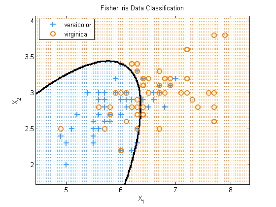

Quadratic Discriminative Analysis On the Fisher Iris Data
load fisheriris X = meas(51:end, 1:2); % for illustrations use 2 species, 2 features labels = species(51:end); [y, support] = canonizeLabels(labels); model = discrimAnalysisFit(X, y, 'quadratic'); h = plotDecisionBoundary(X, y, @(Xtest)discrimAnalysisPredict(model, Xtest)); title('Fisher Iris Data Classification'); if ~isOctave legend(h, support, 'Location', 'NorthWest'); set(gca, 'Xtick', 5:8, 'Ytick', 2:0.5:4); end xlabel('X_1'); ylabel('X_2');